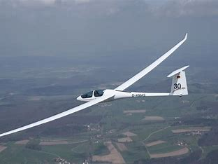
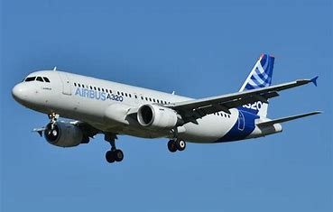

Licencias Aeronáuticas
Un Piloto de Planeador es alguien que opera una aeronave sin motor diseñada para volar aprovechando las corrientes de aire ascendentes. Estos pilotos deben ser expertos en la lectura y el aprovechamiento de estas corrientes de aire para mantenerse en vuelo y realizar maniobras precisas.
Un Privado de Avión (Monomotor) realiza todos los procedimientos necesarios para volar una aeronave. Está capacitado para preparar el plan de vuelo, llevar a cabo todos los chequeos de la aeronave y realizar el despegue, la ruta y el aterrizaje. Una vez que tengas tu licencia de piloto privado, podrás pilotear una aeronave de hasta 5.900 kg, llevar un pasajero (después de acreditar 65 horas de vuelo con fines no comerciales), realizar vuelos de bautismo, transportar correspondencia y/o periódicos, y hacer traslados de una aeronave.
Un Piloto Multimotor es aquel que ha completado un curso de formación especializado para operar aeronaves con más de un motor y una fase crucial en el desarrollo profesional de un piloto. Está diseñada para dotar a los pilotos de las habilidades y conocimientos necesarios para operar una aeronave con más de un motor. La capacitación incluye lecciones teóricas sobre los principios del vuelo multimotor y sesiones prácticas de vuelo para adquirir experiencia en la operación de un avión multimotor bajo diversas condiciones. También se enfoca en procedimientos de emergencia, como manejar fallas de motor y otros problemas técnicos durante el vuelo.
Un Piloto Comercial de Avión es el individuo que se encuentra abarcando un puesto dentro de la cabina de los aviones, lugar donde se toma el control del manejo del avión. Su función principal es manejar y administrar todo lo relacionado con el traslado de pasajeros o mercancía de un lugar a otro mediante el uso de una aeronave. Esto puede incluir avionetas, helicópteros o aviones comerciales.
Un Piloto Comercial de Primera Clase es aquel que ha completado un curso de formación especializado y cumpliendo con un minimo de 950 horas de vuelo. Esta habilitación, es un gran logro en la carrera del piloto, ya que lo habilita a poder ingresar a una linea aérea y volar aquellos aviones que necesitan una licencia especial.
El Piloto de Transporte de Línea Aérea (PTLA), también conocida como ATPL (del inglés Airline Transport Pilot License), es la licencia de piloto de avión de mayor nivel. Los pilotos con esta licencia están autorizados para ejercer como piloto al mando de una aeronave con un peso de más de 5700 kg o más de 9 asientos de pasajeros.
